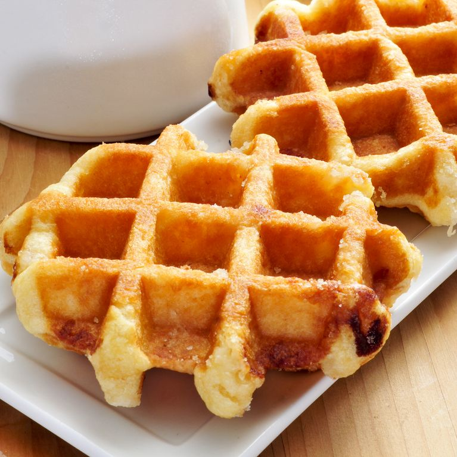

Gaufre

Description
Gaufres are sweet waffles popular in France and Belgium, although their origin is believed to be as far back as
ancient Greece.
Gaufres are made with a batter of flour, milk, eggs, sugar and yeast that is baked in a special waffle maker that
makes them
crispy on the outside and very soft on the inside
The waffle iron gives gaufres the typical 'honeycomb' appearance (which is called gaufre in French).
With this type of griddle, you can also make waffles and chaffles.
Gaufres are best eaten hot sprinkled with icing sugar or garnished with whipped cream, melted chocolate, syrups,
jam or fresh berries.
Ingredients
Ingredients for 4 Gaufre
- 00 FLour, 300g
- Full milk, 250ml/li>
- Eggs, 2
- Vanilla pod, one
- Sugar, 75g
- Butter, 100g
- Salt, just a bit
- Baking powder, 10g
To garnish
Steps
How to prepare Gaufre
- To prepare the dough for the gaufre, start by putting the 2 eggs in a large bowl
- stir with a wooden spoon then add the milk
- and melted butter
- Mix well and then, while stirring, add the sugar
- Then incorporate the flour, baking powder and salt by sifting them through a sieve
- Mix the ingredients well
- add the seeds of the vanilla pod, cover the dough with cling film and let it rest for half an hour in the
refrigerator.
- Heat the waffle maker to the highest temperature and brush it well with melted butter to prevent the dough
from sticking.
Place a ladleful of dough in the waffle iron and spread it well with the help of a spoon.
- (our waffle maker has a diameter of 16 cm). Now close the waffle maker and follow the machine's instructions
regarding
the cooking mode. Cook the gaufre for about 3-4 minutes, until it has taken on colour and is cooked on the
inside.
- The gaufre should be slightly crispy on the outside but soft on the inside. Garnish the gaufre with a
sprinkling of icing sugar.
- and serve them warm, accompanying them as you like (red fruits, chocolate, whipped cream, cocoa etc.).